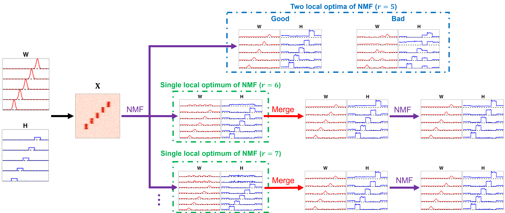
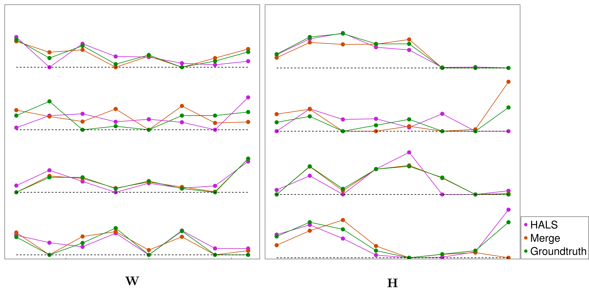

NMFMerge.jl
NMFMerge improves nonnegative matrix factorization (NMF) by over-factorizing and then merging components in pairs. Factorizing a data matrix $X \approx WH$ with more components than ultimately desired, and then optimally and sequentially merging the closest component pairs, tends to reach better and more reproducible optima than factorizing directly into the target number of components.
The method is described in An optimal pairwise merge algorithm improves the quality and consistency of nonnegative matrix factorization (Guo & Holy, IEEE Trans. Signal Process. 2025, doi:10.1109/TSP.2025.3585893).
Why merging helps
Convergence of NMF becomes poor when the factorization is forced to make difficult tradeoffs in describing different features of the data matrix. Performing an initial factorization with an excess of components grants the opportunity to escape such constraints and describe the full behavior of the data; redundant or noisy components are then identified and merged together.

Here the data matrix is $X = WH + N$, where $W$ and $H$ are rank 5 and $N$ is noise. The "Good" and "Bad" factorizations (blue box) are two local minima reached by rank-5 NMF across 1000 different initializations, while the factorizations in the green boxes are minima found by NMF with $r \ge 6$. The higher-rank solutions can be merged to produce a rank-5 factorization. Thus, by first computing a higher-rank NMF and then merging to lower rank, you more reliably identify high-quality solutions.
Installation
NMFMerge is a registered package. From the Julia REPL, type ] to enter package mode and run:
pkg> add NMFMergeQuick start
Start from a known rank-4 ground truth and form the data matrix $X = WH$:
using NMFMerge, NMF, GsvdInitialization, LinearAlgebra
W = [6 0 4 9; 0 4 8 3; 4 4 0 7; 9 1 1 1; 0 3 0 4; 8 1 4 0; 0 0 4 2; 0 9 5 5]
H = [6 10 8 2 0 1 2 10;
0 10 2 9 10 6 0 0;
3 5 0 2 4 0 0 8;
4 9 10 7 7 0 0 0]
X = W * HStandard NMF (HALS) with NNDSVD initialization gives one reconstruction error:
julia> f = svd(X);
julia> result_hals = nnmf(float(X), 4; init=:nndsvd, alg=:cd, initdata=f, maxiter=10^6, tol=1e-4);
julia> result_hals.objvalue / sum(abs2, X) # relative fitting error
0.00019519131697246967NMF-Merge — factorize with 5 components, then merge down to 4 — reaches a better local minimum:
julia> result_merge = nmfmerge(float(X), 5 => 4; alg=:cd, maxiter=10^6);
julia> result_merge.objvalue / sum(abs2, X)
0.00010318497977267728The relative fitting error of NMF-Merge is about half that of standard NMF, so NMF-Merge helps NMF converge to a better solution. (The merge step draws on a randomized truncated SVD, so the exact value varies slightly from run to run.)

The figure shows that NMF-Merge (brown) fits the ground truth (green) more closely than standard NMF (magenta): at 44 of 64 points, the NMF-Merge result is closer to the ground truth.
Lower-level workflow
nmfmerge runs the whole pipeline, but the building blocks are exported so you can drive merging yourself, for example when choosing the number of components:
colnormalizerescales the columns ofWto unit 2-norm (merging requires unit-norm columns), pushing the scale intoHso thatW * His unchanged.merge_pqmerges a normalized factorization down to a chosen number of components and records the sequence of merges, including the reconstruction error each merge incurs. Merging all the way to one component and inspecting those errors might provide hints about an appropriate number of components.merge_replayreplays a prefix of that merge sequence, reproducing the factorsmerge_pqwould have returned had it stopped at the corresponding number of components.
See the API reference for full signatures and examples.
Citation
If you use this package, please cite the publication above; see the "Cite this repository" link in the GitHub "About" bar for format options.